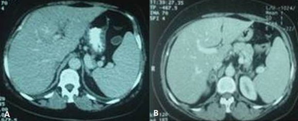
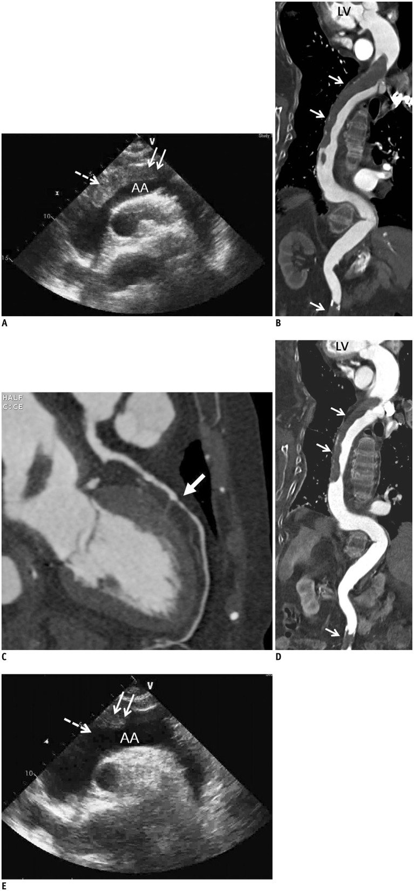

1697 — Hội chứng tăng đông của Cushing: huyết khối tĩnh mạch sâu, thuyên tắc phổi chu phẫu và dự phòng kháng đông / Hypercoagulability of Cushing syndrome
Tags: pattern:huyet-khoi-tinh-mach pattern:tang-dong pattern:khoi-thuong-than vung:thuong-than vung:phoi vung:o-bung protocol:sieu-am-Doppler protocol:CTA-nguc protocol:CT-bung-co-can-quang score:CS-VTE score:Padua incidentaloma:u-thuong-than
Mức chắc chắn (certainty): tổng hợp y văn (literature synthesis) — ghép tổng quan có thuật toán dự phòng (Kuca P và cộng sự, Frontiers in Endocrinology 2026, PMC13659295) + mô hình điểm CS-VTE nguyên bản (Zilio M và cộng sự, Endocrine 2016, PMID 26113424) + 2 ca nguyên văn có ảnh (huyết khối tĩnh mạch cửa do adenoma vỏ thượng thận, PMC4237579; huyết khối động mạch chủ lan rộng do Cushing do thuốc, PMC4170165).
Câu chốt: Cushing là trạng thái tăng đông thật, không phải "rối loạn chuyển hóa đơn thuần". Nguy cơ huyết khối tĩnh mạch (VTE) cao gấp 10–20 lần dân số chung, 7,7% bệnh nhân có VTE trong quá trình bệnh, và một nửa số biến cố xảy ra SAU khi ra viện — nghĩa là "mổ xong, cortisol về bình thường" không phải là điểm kết thúc của dự phòng. Trên hình ảnh: huyết khối ở vị trí bất thường (tĩnh mạch cửa, tĩnh mạch thận, xoang tĩnh mạch não, động mạch chủ) ở người béo trung tâm + tăng huyết áp + đường huyết cao phải làm ta đi tìm khối thượng thận và cortisol.
1. Tổng quan bệnh học – cơ chế hình ảnh
- Dịch tễ Cushing: tần suất mới mắc nội sinh 0,7–2,4 ca/triệu dân/năm; Cushing do thuốc (ngoại sinh) phổ biến hơn nhiều và cũng gây tăng đông (ca PMC4170165: huyết khối động mạch chủ lan rộng ở bệnh nhân 82 tuổi dùng glucocorticoid kéo dài).
- Tần suất VTE (số liệu chốt): các đoàn hệ cũ 2–8% bệnh nhân Cushing hoạt động có VTE lâm sàng; ERCUSYN (n ≈ 1.500): 7,7% có VTE trong quá trình bệnh, tương ứng 14,6 biến cố/1.000 người–năm, cao gấp 10–20 lần so với nhóm chứng ghép cặp; gộp phân tích cho OR ~18. Tổng quan Pháp của ca PMC4237579 nêu 7–25%.
- Vì sao tăng đông (cơ chế — phải hiểu, không học vẹt): cortisol liều cao làm gan tăng tổng hợp yếu tố VIII, yếu tố IX, yếu tố von Willebrand (vWF) và PAI-1 (chất ức chế tiêu sợi huyết) → tăng sinh thrombin (TAT, prothrombin fragment 1+2), giảm phân hủy fibrin, kèm rối loạn chức năng nội mô và tăng tiểu cầu hoạt hóa. Hệ quả xét nghiệm: aPTT ngắn lại, fibrinogen và D-dimer tăng — không phải "xét nghiệm bình thường thì loại trừ".
- Vì sao nguy cơ cao nhất quanh mổ: phẫu thuật (transsphenoidal surgery — TSS, hay cắt thượng thận) cộng bất động + tăng đông tồn tại tạo cửa sổ nguy cơ 4–6 tuần đầu sau mổ; biến cố đã ghi nhận tới 3 tháng sau mổ; ~một nửa VTE xảy ra sau khi ra viện, phần lớn trong 6 tuần.
- Vì sao tăng đông kéo dài: các thông số tiêu sợi huyết chuẩn hóa chậm hơn cortisol — tổng quan ghi nhận nguy cơ còn cao 3–6 tháng sau khi sinh hóa lui bệnh. Đây là lý do các phác đồ mới kéo dài dự phòng ra ngoài viện, khác hoàn toàn thói quen "dừng heparin khi ra viện".
- Vì sao ảnh hưởng tới hình ảnh (imaging mechanism): huyết khối cấp là khối đặc trong lòng mạch → trên siêu âm Duplex mất khả năng xẹp lòng tĩnh mạch khi ép (non-compressibility), mất dòng chảy theo pha, tăng hồi âm theo thời gian (thrombus mới giảm âm); trên CT có cản quang là khuyết thuế (filling defect) trong lòng mạch, không ngấm thuốc, có thể thấy viền thành mạch ngấm (dấu hiệu "target"); trên CTA phổi là khuyết thuế trong động mạch phổi, phân bố theo nhánh, khác mô giả/tạo ảnh do thở (thường không tròn, không thấy trên mọi thì).
- Ngưỡng hình ảnh của adenoma vỏ thượng thận (nguồn gây Cushing): ≤ 10 HU trên CT không cản quang, washout tuyệt đối > 60% / tương đối > 40% ở thì muộn 15 phút — ca PMC4237579: adenoma phải 2 cm, washout > 50%; MRI mất tín hiệu ở pha ngược (out-of-phase) do mỡ nội bào. U không điển hình/tăng đông bất thường → mới cần MRI, BIPSS (Cushing phụ thuộc ACTH).
- Vì sao phải chụp xương: cortisol làm giảm tạo xương, tăng hủy xương → DXA (T-score ≤ −2,5 = loãng xương) + đánh giá gãy đốt sống bằng hình ảnh (VFA). Đây là mâu thuẫn điều trị kinh điển: bệnh nhân vừa tăng đông vừa dễ gãy xương vừa dễ chảy máu — quyết định kháng đông phải cá thể hóa.
2. Mẫu hình + chẩn đoán phân biệt theo vị trí (Gamut)
- Huyết khối ở vị trí bất thường + khối thượng thận: Cushing (adenoma/ACC) là hàng đầu; phân biệt hội chứng tăng đông di truyền (yếu tố V Leiden, prothrombin G20210A, thiếu protein C/S/antithrombin), kháng thể kháng phospholipid, bệnh ác tính (Trousseau), bệnh tủy sinh tăng, bệnh Behçet (huyết khối + loét miệng), bạch cầu ái toan.
- VTE thông thường (chi dưới, phổi) ở người béo + THA + ĐTĐ: Cushing là nguyên nhân ẩn cần tầm soát; đồng thời phân biệt phù hai chân do cortisol (không đau, không đỏ, siêu âm ép được) với DVT — bẫy hay gặp vì béo + phù làm siêu âm khó.
- Thuyên tắc phổi ở Cushing — gamut theo hình ảnh: huyết khối cấp (khuyết thuế trung tâm, giãn nhánh), bán cấp/mạn (dải xơ, hẹp lòng, tuần hoàn bàng hệ), nhồi máu phổi (đám mờ hình nêm ngoại vi), viêm phổi cơ hội do suy giảm miễn dịch (không phải PE nhưng cùng cảnh "khó thở + sốt"), và suy tim do Cushing (tim giãn, không tăng áp phổi).
- Nguồn huyết khối "không điển hình" cần nhớ: tĩnh mạch cửa/thân tạng (ca PMC4237579), tĩnh mạch thận (đau hông lưng + tiểu máu), xoang tĩnh mạch não (đau đầu + nhìn đôi ở người trẻ béo), động mạch chủ (ca PMC4170165: thiếu máu chi, đau lưng), chi trên sau catheter.
- Gợi nhớ CUSHING-VTE: Cortisol cao (UFC, cortisol nửa đêm), UFC cao + Striae đỏ + Huyết áp cao, Immobility, Nhiễm trùng cấp nặng, Già (≥ 69 tuổi), VTE trước đó, Tăng đông xét nghiệm (aPTT ngắn, FVIII cao), Ectopic/ACC.
3. Bảng so sánh phân biệt (ma trận đối chiếu)
| Thực thể (entity) | Hình ảnh điển hình | Chốt vào (rule-in) | Chốt loại (rule-out) | Gợi ý xác nhận |
|---|---|---|---|---|
| VTE do Cushing | Khuyết thuế trong tĩnh mạch/động mạch, vị trí có thể bất thường; khối thượng thận ≤ 10 HU, washout > 60% | VTE + béo trung tâm + striae đỏ + THA/ĐTĐ; UFC tăng, cortisol nửa đêm > 3,15× ULN | Xét nghiệm đông máu "bình thường" không loại trừ; thiếu khối thượng thận không loại trừ (Cushing do thuốc) | UFC/cortisol nửa đêm, CT/MRI thượng thận, siêu âm Duplex, CTPA |
| Huyết khối do tăng đông di truyền | Huyết khối tái phát, nhiều vị trí, tuổi trẻ, không khối thượng thận | Tiền sử gia đình + huyết khối lúc < 45 tuổi + tái phát | Cushing có striae + THA + tăng đường huyết → không quy cho di truyền đơn thuần | FV Leiden, PT G20210A, protein C/S, antithrombin |
| Huyết khối do ung thư (Trousseau) | Huyết khối di chuyển/bất thường, kèm khối u, sụt cân | Ung thư đã biết + huyết khối tái phát dù kháng đông | Huyết khối đơn độc + khối thượng thận lành tính → nghĩ Cushing | CT ngực–bụng–chậu, CA 19-9, nội soi |
| Phù do Cushing (không huyết khối) | Phù hai chân mềm, không đau, tĩnh mạch ép được, dòng chảy theo pha | Béo + phù đối xứng + không đau + Duplex âm tính | Đau bắp chân một bên + chu vi chênh > 3 cm → phải loại DVT | Siêu âm Duplex ép lòng mạch |
| Cushing do thuốc (ngoại sinh) | Không có khối thượng thận; huyết khối có thể lan rộng, nhiều tầng (ca PMC4170165) | Tiền sử glucocorticoid + đặc điểm Cushing + VTE | ACTH thấp + thượng thận bình thường hai bên | Ngừng thuốc, cortisol, siêu âm/CT mạch |
4. Protocol chụp + hệ phân độ/điểm chuẩn hóa
4.1. Chẩn đoán huyết khối (không bỏ sót vị trí bất thường)
- Siêu âm Duplex tĩnh mạch chi dưới: tiêu chuẩn chính là mất khả năng ép xẹp (non-compressibility); bổ sung mất dòng theo pha, tăng hồi âm, không tăng dòng khi ép bắp chân. Độ nhạy cao cho DVT gần (đùi–khoeo ~95%), thấp hơn rõ cho DVT xa (bắp chân ~50–70%) → âm tính ở bắp chân chưa loại trừ, cân nhắc lặp sau 5–7 ngày nếu lâm sàng thuyết phục.
- CTA phổi (CTPA): lát ≤ 1,25 mm, cản quang ~300–350 mg I/kg, bolus tracking; độ nhạy ~83%, độ đặc hiệu ~96% cho thuyên tắc phổi (PIOPED II). Khuyết thuế trung tâm trên ≥ 2 lát liên tiếp mới đọc là huyết khối.
- CT bụng có cản quang khi nghi huyết khối tĩnh mạch cửa/thận: khuyết thuế trong lòng mạch + viền thành ngấm; đánh giá nhồi máu tạng đi kèm (ca PMC4237579: nhánh trái tĩnh mạch cửa).
- Siêu âm tim/CT mạch khi nghi huyết khối động mạch lớn (ca PMC4170165: siêu âm tim qua thành ngực thấy huyết khối trong quai động mạch chủ, CT xác nhận huyết khối lan toàn động mạch chủ ngực–bụng, điều trị chỉ bằng kháng đông và huyết khối giảm dần trên CT theo dõi).
4.2. Chẩn đoán Cushing + đánh giá xương
- Sinh hóa: cortisol tự do nước tiểu 24 giờ (UFC), cortisol nửa đêm (nước bọt/huyết tương), test ức chế dexamethasone 1 mg qua đêm; sau đó ACTH để phân biệt phụ thuộc/không phụ thuộc; BIPSS khi MRI tuyến yên âm tính.
- Hình ảnh thượng thận: CT mỏng ≤ 2 mm không cản quang (đo HU) + thì muộn 15 phút (washout); MRI in/out-phase khi adenoma giàu mỡ; PET/CT, MIBG khi nghi ACC/di căn.
- Xương: DXA cột sống + cổ xương đùi và VFA ngay khi chẩn đoán (gãy đốt sống có thể không triệu chứng); lặp lại sau 12 tháng.
4.3. Dự phòng kháng đông — thuật toán
- Điểm CS-VTE (Zilio 2016, n = 176, 20 VTE trong đó 4 PE): tuổi ≥ 69 (2 điểm), giảm vận động (2), nhiễm trùng cấp nặng (1), biến cố tim mạch trước đó (1), cortisol nửa đêm > 3,15 lần giới hạn trên (1), aPTT ngắn (1). < 2 điểm: không tăng nguy cơ; 2 điểm: 10%; 3 điểm: 46%; ≥ 4 điểm: 85%; lấy ≥ 3 làm ngưỡng dự báo thì phân loại đúng 94%. Chưa được ngoại kiểm → dùng hỗ trợ, không thay lâm sàng.
- Thuốc: LMWH là lựa chọn ưu tiên chu phẫu — enoxaparin 40 mg dưới da/ngày hoặc dalteparin 5.000 IU/ngày; chỉnh liều/theo dõi anti-Xa ở béo phì nặng, suy thận; theo dõi tiểu cầu nếu nguy cơ HIT.
- Thời điểm và thời gian (Delphi 2025): khởi động ngay khi chẩn đoán hoặc muộn nhất trước mổ, duy trì suốt thời gian nằm viện, kéo dài 4–12 tuần sau ra viện; nhóm nguy cơ rất cao (béo phì nặng, VTE trước đó, FVIII/PAI-1 tăng mạnh) có thể tới 3 tháng. DOAC chưa có dữ liệu dự phòng trong Cushing và không ưu tiên chu phẫu; cân nhắc khi điều trị dài hạn ở bệnh nhân chọn lọc (kiểm tra tương tác CYP3A4 với osilodrostat/mifepristone).
- Sàng lọc trước mổ: siêu âm Duplex chi dưới ở bệnh nhân Cushing nặng hoặc có thêm yếu tố nguy cơ — DVT không triệu chứng gặp tới 8–10% trước TSS khi sàng lọc hệ thống.
- Khi có chống chỉ định kháng đông: dự phòng cơ học (băng chun y khoa + bơm khí áp lực ngắt quãng); đánh giá nguy cơ chảy máu bằng IMPROVE trước khi quyết định.
- Mổ nội soi thượng thận không làm giảm nhu cầu dự phòng: nguy cơ nằm ở trạng thái tăng đông, không ở độ lớn vết mổ.
flowchart TD
A[Chẩn đoán Cushing] --> B{Tính CS-VTE + yếu tố nguy cơ}
B -->|Điểm < 2, không yếu tố| C[Duplex chi dưới + đánh giá lại trước mổ]
B -->|Điểm ≥ 2 hoặc có yếu tố| D[LMWH dự phòng: enoxaparin 40 mg/ngày]
C --> E{Có VTE?}
D --> E
E -->|Có| F[Điều trị kháng đông trị liệu + tìm vị trí bất thường]
E -->|Không| G[Tiếp tục LMWH suốt nằm viện]
G --> H{Sau ra viện: nguy cơ cao?}
H -->|Có| I[Kéo dài 4–12 tuần, tối đa 3 tháng]
H -->|Không| J[Dừng sau 4 tuần + hẹn tái khám 6 tuần]
F --> K[Theo dõi DXA/VFA và nguy cơ chảy máu]
I --> K
J --> K
5. Biến thể bình thường và cạm bẫy
- D-dimer tăng do Cushing (viêm mạn, béo, fibrinogen cao) → không dùng D-dimer để loại trừ VTE ở nhóm này; ngược lại D-dimer bình thường ở bệnh nhân có huyết khối mạn cũng không loại trừ.
- aPTT ngắn bị đọc là "tăng đông nhẹ, không cần làm gì" — thực tế là một điểm trong CS-VTE score; đừng bỏ qua khi kèm cortisol nửa đêm cao.
- UFC bình thường trong Cushing chu kỳ/ngắt quãng → nếu nghi cao, lặp xét nghiệm nước bọt nửa đêm nhiều lần; không loại trừ bằng một lần xét nghiệm.
- Phù hai chân do cortisol (dịch, không huyết khối) bị điều trị như DVT, hoặc ngược lại DVT bị bỏ qua vì "chắc do Cushing gây phù" — luôn đo chu vi + siêu âm ép khi đau/đỏ một bên.
- VTE sau ra viện: ~50% biến cố xảy ra sau xuất viện, phần lớn trong 6 tuần → dừng dự phòng ngay khi ra viện là điểm mù lớn nhất.
- Khối thượng thận "tình cờ" ở bệnh nhân VTE: đừng chỉ gọi là incidentaloma lành tính — đo HU, washout, và hỏi triệu chứng Cushing; ngược lại Cushing do thuốc không có khối nên thiếu khối không loại trừ.
- Kháng đông ở người vừa loãng xương vừa tăng đông: LMWH/DOAC không gây loãng xương (khác heparin không phân đoạn kéo dài) nhưng nguy cơ chảy máu vẫn phải cân với nguy cơ gãy xương do ngã; không ngừng kháng đông chỉ vì DXA thấp.
- Tạo ảnh giả trên CTPA: khuyết thuế do thở/hòa trộn thuốc thường không tròn, không liên tục, gặp ở nhánh đáy; huyết khối thật thấy trên ≥ 2 lát và có bờ lồi vào lòng mạch.
6. Tự lượng giá — Blind Quiz
Ca 1 — Nữ 66 tuổi, đau dữ dội hạ sườn phải khởi phát đột ngột. Béo trung tâm, huyết áp 150/90 mmHg, nhiều vết rạn da rộng màu tím ở bụng.

- Câu hỏi: Mô tả 2 bất thường trên CT? Xét nghiệm đông máu "âm tính" có loại trừ nguyên nhân không? Cần làm thêm gì để chốt?
Bấm để hiện đáp án (findings + chẩn đoán)
- Dấu hiệu (findings): (A) khuyết thuế trong nhánh trái tĩnh mạch cửa — huyết khối tĩnh mạch cửa; (B) adenoma thượng thận phải 2 cm, tỷ trọng không cản quang thấp, washout > 50%.
- Chẩn đoán: huyết khối tĩnh mạch cửa do hội chứng Cushing (adenoma vỏ thượng thận). Bilan nguyên nhân huyết khối kinh điển âm tính (protein C/S, antithrombin, kháng phospholipid, không ổ nhiễm, không u gan) nhưng UFC 233 µg/24 giờ và cortisol sau ức chế 1 mg = 76 ng/mL xác nhận Cushing.
- Bài học: huyết khối tĩnh mạch cửa không rõ nguyên nhân phải tầm soát Cushing; bilan đông máu bình thường không loại trừ tăng đông do nội tiết.
- Nguồn ảnh: Pan African Medical Journal 2014, PMCID PMC4237579, CC BY (nguyên bản, giữ nhãn A–B).
Ca 2 — Nữ 82 tuổi, dùng glucocorticoid kéo dài, nhập viện vì đau lưng và thiếu máu chi dưới.

- Câu hỏi: Huyết khối nằm ở đâu, có phải "huyết khối tĩnh mạch" không? Vì sao Cushing do thuốc vẫn gây tăng đông? Hướng điều trị trong ca này?
Bấm để hiện đáp án (findings + chẩn đoán)
- Dấu hiệu (findings): (A, E) siêu âm tim qua thành ngực: khối huyết khối lớn trong quai động mạch chủ, đầu tự do; (B, D) CT dựng hình động mạch chủ: huyết khối lan dọc toàn bộ động mạch chủ ngực–bụng; (C) CT thì muộn: khuyết thuế trong lòng mạch.
- Chẩn đoán: huyết khối động mạch chủ lan rộng do Cushing do thuốc (ngoại sinh) — không phải huyết khối tĩnh mạch, và không có bất thường đông máu kinh điển.
- Điều trị: ca này chỉ dùng kháng đông, CT theo dõi cho thấy huyết khối giảm dần — minh họa rằng tăng đông do cortisol đảo ngược được một phần khi loại bỏ nguyên nhân, nhưng nguy cơ vẫn cần theo dõi.
- Nguồn ảnh: Korean Journal of Radiology 2014, PMCID PMC4170165, CC BY-NC 3.0 (nguyên bản, giữ nhãn A–E).
Bài liên quan chéo
- 194 – Cushing do u vỏ thượng thận ở trẻ: chuẩn bị chu phẫu
- 195 – Đột quỵ cấp ở bệnh nhân PPGL chưa cắt u
- 193 – Ung thư vỏ thượng thận ở trẻ (ACC)
- 155 – Thượng thận tình cờ
- 163 – Pylephlebitis & huyết khối tĩnh mạch mạc treo
- 104 – Nhiễm trùng nang gan trong PLD/ADPKD
Không dùng để chẩn đoán độc lập khi chưa có người hướng dẫn.